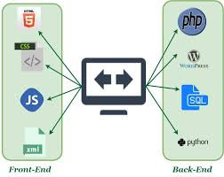

difference between frontend and backend
| Web is a vast, interconnected network of computers and servers that store and share information. It allows users to access and interact with billions of websites, applications, and resources from anywhere in the world. |  | The World Wide Web is a subset of the internet that uses hypertext to link information. It's the most popular way to access and share information online, with billions of websites and pages available. |
|
| Web development lifecycle is a structured process for creating websites. It involves planning, designing, coding, testing, and launching. This iterative process ensures the website meets user needs and is efficient and effective. |
|
Frontend development focuses on the user interface (UI) of a website. It involves creating the visual elements, layout, and interactions that users see and interact with. HTML, CSS, and JavaScript are commonly used languages for frontend development. |
|
| Backend development handles the server-side logic of a website. It involves processing data, managing databases, and handling API requests. Languages like Python, Ruby, and Java are often used for backend development. | Backend development also includes building and maintaining APIs, which allow different applications to communicate with each other. It plays a crucial role in ensuring the website's functionality, performance, and security. |